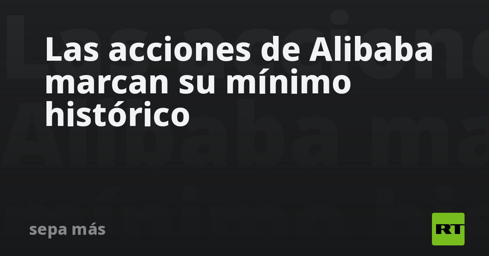

El puto Alibaba
Entré cuando estaba a 200 pensando que era un chollo, volví a comprar cuando estaba a 180.Ahora ya está a 163.
¿Donde coño está el suelo de esta acción?¿que opináis?¿Realmente le interesa al gobierno chino cargarse a todas las tecnológicas?
Posted On: 2021-08-19T00:00:00
Posted By: BlackIce
pide un préstamo para seguir comprando, nada puede salir mal
Posted On: 2021-08-19T00:00:00
Posted By: Casino
Si te pones nervioso con una caída del 20% quizá lo de invertir en acciones individuales (y en la grandísima mayoría de fondos activos y pasivos que existen) no es lo tuyo.
Posted On: 2021-08-19T00:00:00
Posted By: gordinflas
Eso es lo que yo me estoy temiendo.
Posted On: 2021-08-19T00:00:00
Posted By: BlackIce
gordinflas dijo: Si te pones nervioso con una caída del 20% quizá lo de invertir en acciones individuales (y en la grandísima mayoría de fondos activos y pasivos que existen) no es lo tuyo.
Ya, el problema es que lleva una caída acumulada de un 60% en un año y ya me parece raro.
Posted On: 2021-08-19T00:00:00
Posted By: BlackIce
Casino dijo: pide un préstamo para seguir comprando, nada puede salir mal
LLevo muy poco en Alibaba (solo 5K) pero es muy raro lo que lleva pasando con esta acción desde hace un año.
Posted On: 2021-08-19T00:00:00
Posted By: BlackIce
Yo salí del 50% de mi participación cuando se puso en 185.Ahora me arrepiento de no haber salido del todo.En todo caso puede ser temporal por el alza brutal del coste de carga contenerizada?Eso mermará las transacciones?
Posted On: 2021-08-19T00:00:00
Posted By: TravellerLatam
A 260 la llevo yo y sin problema
Posted On: 2021-08-19T00:00:00
Posted By: CharlieMonguer
CharlieMonguer dijo: A 260 la llevo yo y sin problema
El desplome de las acciones de la firma fue consecuencia de las nuevas prácticas de negocio de las autoridades chinas, que este martes anunciaron el endurecimiento de la regulación de competencia y de protección de datos en el mercado digital, según Bloomberg.
actualidad.rt.com
Posted On: 2021-08-19T00:00:00
Posted By: SEVILLA2014
Pues es verdad, acabo de ver LVMH y lleva toda la semana hostiándose pero bien.Raro, raro.
Posted On: 2021-08-19T00:00:00
Posted By: BlackIce
Michael Burry tenia hace 6 meses en su cartera alibaba y jdcom, y lo ha vendido todo.Warren Buffet lo dijo hace un año, que jamas el apostaria contra el mercado de EEUU.No tiene ni una accion china.
Tengo informacion de que dentro de poco el Gobierno chino va a nacionalizar todas las empresas chinas estrategicas y las va a pagar a 1 ctv por dolar.Y las va a sacar de los mercados.alibaba jd y demas seran empresas publicas del Gobierno Chino.Os van a pagar 1/100.
Posted On: 2021-08-19T00:00:00
Posted By: jaimegvr
jaimegvr dijo: Michael Burry tenia hace 6 meses en su cartera alibaba y jdcom, y lo ha vendido todo.Warren Buffet lo dijo hace un año, que jamas el apostaria contra el mercado de EEUU.No tiene ni una accion china.Tengo informacion de que dentro de poco el Gobierno chino va a nacionalizar todas las empresas chinas estrategicas y las va a pagar a 1 ctv por dolar.Y las va a sacar de los mercados.alibaba jd y demas seran empresas publicas del Gobierno Chino.Os van a pagar 1/100.
fuente: BAIZUO NEWS
Posted On: 2021-08-19T00:00:00
Posted By: burbucoches
Burry, Wood, todos estan o han vendido ya todas sus acciones chinas.
Posted On: 2021-08-19T00:00:00
Posted By: jaimegvr

Content Date: 2021-08-19
Download Date: 2021-09-09
Document ID: L0C04G2GN